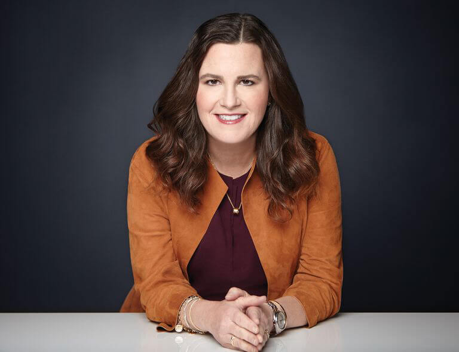

Mary Kay Chief Operating Officer Deborah Gibbins said:
We are a multinational company,
and we know that the area that needs support
goes far beyond the Gulf of Mexico.
Corporate social responsibility and global leader Mary Kay last year announced a partnership with The Nature
Conservancy (The Nature Conservancy), the protection of fisheries and Texas Gulf of Mexico. Today,
Mary Kay is proud to announce that the company has further expanded its cooperation with The Nature
Conservancy to have a positive impact on global waters and native species.
Conservancy (The Nature Conservancy), the protection of fisheries and Texas Gulf of Mexico. Today,
Mary Kay is proud to announce that the company has further expanded its cooperation with The Nature
Conservancy to have a positive impact on global waters and native species.
DEBORAH GIBBINS

MARY KAY
CHIEF OPERATING OFFICER
CHIEF OPERATING OFFICER
Mary Kay Chief Operating Officer Deborah Gibbins said:
Mary Kay Chief Operating Officer Deborah Gibbins said: "All life on earth originates from the ocean and depends on the ocean. Water is the most precious resource on the earth. We must do our best to protect it.
Actively invest in the protection of global oceans ,
natural environment and biodiversity
The conservation plan aims to protect the rich and diverse marine life. Mary Kay will support the work of The Nature Conservancy through the following projects: